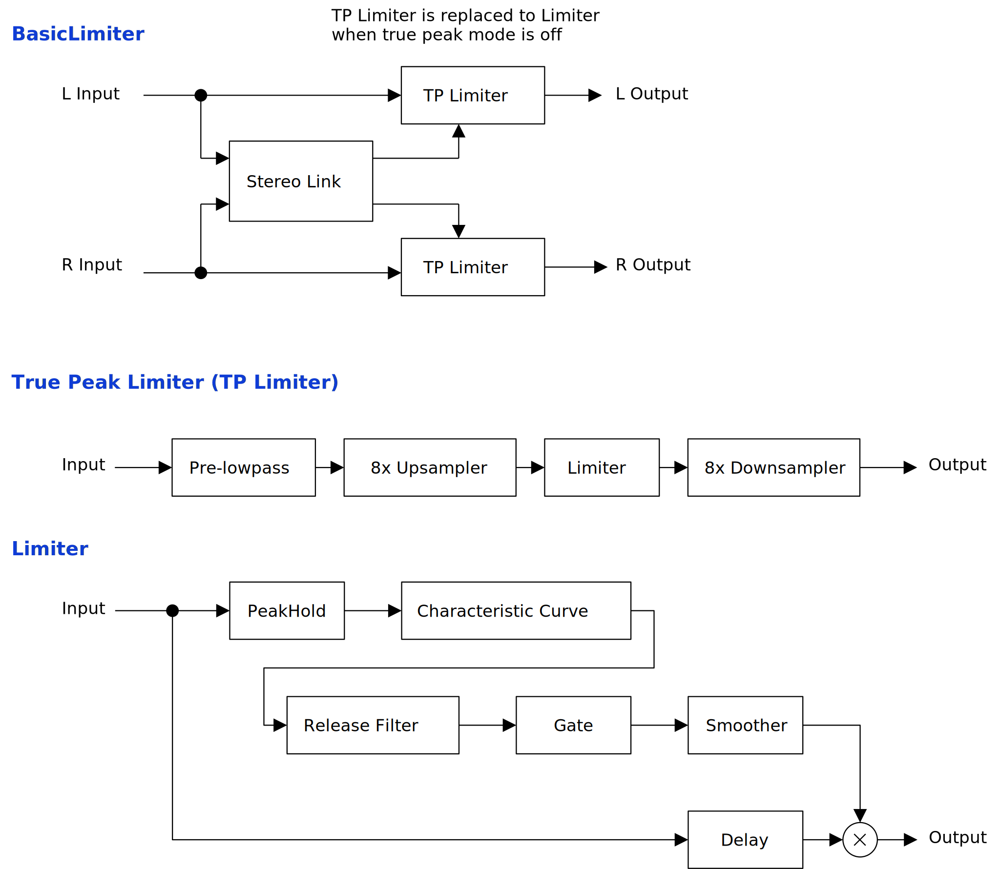

Update: 2022-07-25
BasicLimiter is a basic single band limiter. The sound is nothing new, but the design of true peak mode is a bit luxurious.
An extended version BasicLimiterAutoMake is also available. Added features are automatic make up gain, sidechain, and switching between left-right (L-R) and mid-side (M-S). Note that CPU load is over 1.5 times heavier than BasicLimiter.
The package includes following builds:
Linux build is built on Ubuntu 20.04. If you are using distribution other than Ubuntu 20.04, plugin will not likely to run. In this case, please take a look at build instruction.
Feel free to contact me on GitHub
repository or ryukau@gmail.com.
You can fund the development through paypal.me/ryukau. Current goal is to purchase M1 mac for better macOS support. 💸💻
Place *.vst3 directory to:
/Program Files/Common Files/VST3/ for Windows.$HOME/.vst3/ for Linux./Users/$USERNAME/Library/Audio/Plug-ins/VST3/ for
macOS.DAW may provides additional VST3 directory. For more information, please refer to the manual of the DAW.
Extract preset zip, then place preset directory to the OS specific path:
/Users/$USERNAME/Documents/VST3 Presets/Uhhyou$HOME/.vst3/presets/Uhhyou/Users/$USERNAME/Library/Audio/Presets/UhhyouPreset directory name must be the same as the plugin. Make
Uhhyou directory if it does not exist.
If DAW doesn’t recognize the plugin, try installing C++
redistributable (vc_redist.x64.exe). Installer can be found
in the link below.
On Ubuntu 18.0.4, those packages are required.
sudo apt install libxcb-cursor0 libxkbcommon-x11-0If DAW doesn’t recognize the plugin, take a look at
Package Requirements section of the link below and make
sure all the VST3 related package is installed.
REAPER on Linux may not recognize the plugin. A workaround is to
delete a file ~/.config/REAPER/reaper-vstplugins64.ini and
restart REAPER.
When trying to run plugin first time, following message may appear on macOS.
<PluginName>.vst3 is damaged and can't be opened. You should move it to
the Trash"In this case, open terminal and try running following command to
unzipped .vst3 directory.
xattr -rc /path/to/PluginName.vst3Plugin may be considered as unsigned/un-notarized application. In this case, try following the steps below.
sudo spctl --master-disable.Beware that steps above degrades security of your system. To revert the settings, follow the steps below.
sudo spctl --master-enable.At first time, create color config file to:
/Users/USERNAME/AppData/Roaming/UhhyouPlugins/style/style.json
on Windows.$XDG_CONFIG_HOME/UhhyouPlugins/style/style.json on
Linux.
$XDG_CONFIG_HOME is empty, make
$HOME/.config/UhhyouPlugins/style/style.json./Users/$USERNAME/Library/Preferences/UhhyouPlugins/style/style.json
on macOS.Below is a example of style.json.
{
"fontFamily": "Tinos",
"fontBold": true,
"fontItalic": true,
"foreground": "#000000",
"foregroundButtonOn": "#000000",
"foregroundInactive": "#8a8a8a",
"background": "#ffffff",
"boxBackground": "#ffffff",
"border": "#000000",
"borderCheckbox": "#000000",
"borderLabel": "#000000",
"unfocused": "#dddddd",
"highlightMain": "#0ba4f1",
"highlightAccent": "#13c136",
"highlightButton": "#fcc04f",
"highlightWarning": "#fc8080",
"overlay": "#00000088",
"overlayHighlight": "#00ff0033"
}Following is a list of font options.
fontFamily: Font family name.fontBold: Enable bold style when
true, disable when false.fontItalic: Enable italic style when
true, disable when false.To use custom font, place *.ttf file into custom font
path: *.vst3/Contents/Resources/Fonts.
Notice: If the combination of
fontFamily, fontBold, fontItalic
is not exists in custom font path, default font of VSTGUI is used.
If fontFamily is set to empty string "",
then "Tinos"
is used as fallback. If the length is greater than 1 and the font family
name doesn’t exists, default font of VSTGUI is used.
Styles other than bold, italic or bold-italic are not supported by VSTGUI. For example, “Thin”, “Light”, “Medium”, and “Black” weights cannot be used.
Hex color codes are used.
First letter # is conventional. Plugins ignore the first
letter of color code, thus ?102938, \n11335577
are valid.
Do not use characters outside of 0-9a-f for color
value.
Following is a list of color options. If an option is missing, default color will be used.
foreground: Text color.foregroundButtonOn: Text color of active toggle button.
Recommend to use the same value of foreground or
boxBackground.foregroundInactive: Text color of inactive components.
Currently, only used for TabView.background: Background color.boxBackground: Background color of inside of box shaped
components (Barbox, Button, Checkbox, OptionMenu, TextKnob,
VSlider).border: Border color of box shaped components.borderCheckbox: Border color of CheckBox.borderLabel: Line color of parameter section
label.unfocused: Color to fill unfocused components.
Currently, only used for knobs.highlightMain: Color to indicate focus is on a
component. Highlight colors are also used for value of slider components
(BarBox and VSlider).highlightAccent: Same as highlightMain.
Used for cosmetics.highlightButton: Color to indicate focus is on a
button.highlightWarning: Same as highlightMain,
but only used for parameters which requires extra caution.overlay: Overlay color. Used to overlay texts and
indicators.overlayHighlight: Overlay color to highlight current
focus.Right Click on the controls pops up a context menu provided by DAW.
Knob and slider can do:
The algorithm used in BasicLimiter causes over-limiting when input
amplitude is extremely high. When over-limiting happens, higher input
amplitude turns into lower output amplitude. This problems is expected
to happen when input amplitude exceeds 2^53, or +319
dB.
If the image is small, use Ctrl + Mouse Wheel or “View Image” on right click menu to scale.
Diagram only shows overview. It’s not exact implementation.

Threshold of limiter output amplitude.
When True Peak is off, output amplitude is limited under
Threshold.
When True Peak is on, output amplitude might exceeds
Threshold. This is due to the limitation of real-time
algorithm.
Threshold of gate. When input amplitude is less than the value of
Gate for the duration of Attack, output
amplitude becomes 0.
Transition time of smoothing filter which applies to internal
envelope. The value of Attack also adds to the latency.
For the sound with sharp transitions like drums, recommend to set
Attack under 0.02 seconds. This value, 0.02 seconds, is
based on a psychoacoustic effect called temporal
masking.
Smoothness to reset internal envelope to neutral position.
Internally, the inverse value of Release is used as
cutoff frequency. This means that the value of Release is
not exact. Because of temporal masking, setting the sum of
Release and Sustain under 0.2 seconds is
recommended.
Additional peak hold time for the internal envelope.
Sustain causes more ducking when applied to sounds like
drums. For sounds like distorted guitar or sustaining synthesizer,
Sustain might sound cleaner than Release,
because it works similar to auto-gain. Note that when sustain is longer,
it deviates from the curve of temporal masking.
When Stereo Link is set to 0.0, limiter for each channel
works independently. When set to 1.0, maximum of all the input amplitude
is used for both limiter. Following snippet shows the calculation of
Stereo Link
absL = fabs(leftInput).
absR = fabs(rightInput).
absMax = max(absL, absR).
amplitudeL = absL + stereoLink * (absMax - absL).
amplitudeR = absR + stereoLink * (absMax - absR).When Stereo Link is set to 0.0, and input amplitude is
leaned to left or right, it may sounds like the pan is wobbling. To
reduce wobbling, set the value to 0.0, then gradually increase the value
to 1.0. Stop increasing the value when pan wobbling becomes
inaudible.
Enables true peak mode when checked.
While true peak mode is enabled, lowpass filter is applied to remove the components near nyquist frequency. This lowpass filter is designed to only change the gain over 18000 Hz when sampling rate is 48000 Hz.
Sample peak might exceeds Threshold. Especially when
sample peak exceeds 0 dB, the value of Overshoot becomes
greater than 0. Lower Threshold in this case.
True peak restoration at nyquist frequency requires infinite length FIR filter (sinc interpolation). Therefore, it’s impossible to compute in real time. This is the reason that lowpass is applied, and true peak mode overshoots.
Resets Overshoot to 0 when clicked.
When output sample peak exceeds 0 dB, the value of
Overshoots changes to greater than 0, and
Reset Overshoot will be lit.
Enable automatic make up gain when checked.
When Auto Make Up is enabled, output amplitude become
lower when Threshold is greater than
Auto Make Up Target Gain.
When Auto Make Up is enabled, and Threshold
is increasing, overshoot may occur. Recommend to set the target gain to
-0.1 dB (default) or lower in this case.
If Threshold needs to be changed when input signal is
hot, insert another limiter for safe guard.
Maximum amplitude after automatic make up gain is applied. This is a
control placed on the right side of Auto Make Up. Unit is
decibel.
When Channel Type is set to M-S, maximum
amplitude is +6 dB of Auto Make Up Target Gain.
When checked, enables sidechain and disables
Auto Make Up.
Auto Make Up is disabled because source amplitude is not
affected by Threshold while sidechain is activated.
BasicLimiterAutoMake has 2 stereo input. No. 1 is source, and No. 2 is sidechain. For routing, refer to your DAW manual.
Switch the type of stereo channel between left-right
(L-R) and mid-side (M-S).
When the type is M-S, sample peak becomes
2 * Threshold, or +6.02 dB over Threshold.
Therefore, when using Auto Make Up with M-S,
it is recommended to set Auto Make Up Target Gain to -6.1
dB or lower. This behavior aims to provide the same loudness when
comparing L-R and M-S.
style.json.Gate when the value is set to -inf
dB.BasicLimiter is licensed under GPLv3. Complete licenses are linked below.
If the link above doesn’t work, please send email to
ryukau@gmail.com.
VST is a trademark of Steinberg Media Technologies GmbH, registered in Europe and other countries.